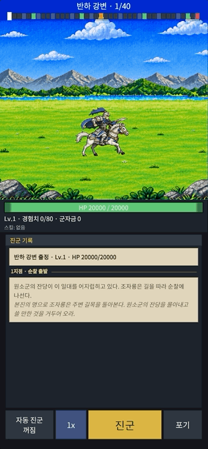
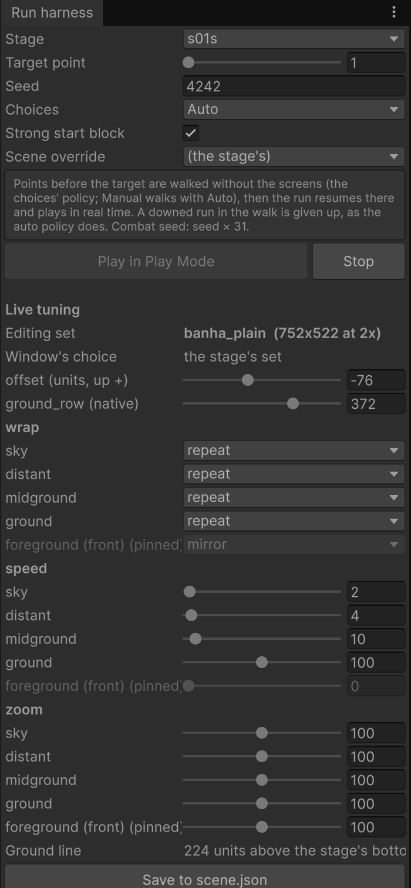

작업 목표
런 화면은 조자룡이 오른쪽으로 진군하는 동안 배경이 뒤로 흘러가는 구조다. 이전까지는 배경이 가까운 곳, 중간, 먼 곳 세 장으로 정해져 있었다. 새로 받은 배경은 하늘부터 전경까지 여섯 장으로 나뉘어 있어서, 이 원본을 거의 그대로 쓰면서도 앞으로 만들 배경 세트마다 같은 방법으로 올릴 수 있어야 했다.
작업 결과
배경 세트를 레이어 N장의 데이터로 바꿨고, 첫 세트 「반하 평원」을 1장의 스테이지 7개에 연결했다. 게임을 실행한 채 속도와 이음새, 지면선을 조정하고 저장하는 에디터 패널도 만들었다.


하늘, 원경, 중경, 지면, 소품, 전경을 합치지 않고 역할별로 받았다.
원본을 절반으로 줄여 2배로 표시한다. 유닛과 같은 픽셀 격자를 쓴다.
하늘, 원경, 중경, 지면 순서. 멀수록 거의 멈춘 것처럼 흐른다.
1장의 본편과 순찰 스테이지 7개가 같은 배경 세트를 공유한다.
레이어를 합치는 첫 방식은 중단했다
처음 계획은 기존 규격에 맞추기 위해 6장을 가까운 곳, 중간, 먼 곳 세 장으로 합쳐서 쓰는 것이었다. 합성 스크립트까지 만들어 반입을 시작했지만, 실제 화면에서 보니 맞지 않았다.
하늘과 원경이 한 장이 되면
두 레이어가 같은 속도로 흘러서 원근감이 사라졌다. 하늘은 거의 멈춰 있고 원경은 아주 느리게 움직여야 깊이가 느껴진다. 원본 그대로 쓰는 것이 맞다는 결론이 나왔다.
배경마다 구성이 달라진다
세 장 고정 구조는 이번 배경에만 맞춘 것이었다. 앞으로 레이어가 네 장인 배경도, 일곱 장인 배경도 올 수 있다. 그래서 장수를 고정하지 않는 구조로 바꾸기로 했다.
배경 세트를 레이어 N장의 데이터로 바꿨다
배경 세트마다 레이어 장수를 자유롭게 두고, 레이어마다 어떻게 움직이는지를 표의 한 줄로 정한다. 런 화면은 이 표대로 뒤쪽 레이어, 유닛, 앞쪽 레이어 순서로 그린다.
| 정하는 값 | 하는 일 |
|---|---|
| 속도 | 진군 속도에 대한 비율. 하늘 2%, 원경 4%, 중경 10%, 지면 100% |
| 앞 / 뒤 | 유닛 뒤에 그릴지, 앞에 그릴지(전경) |
| 이음새 처리 | 이미지가 끝나는 곳을 거울처럼 뒤집어 잇거나(mirror), 그대로 반복(repeat) |
| 화면 고정 | 흘리지 않고 런 영역 바닥에 붙여 둔다(전경) |
| 전투 줌 반응 | 공격 장면에서 화면이 커질 때 이 레이어도 같이 커질지(값은 전투 개선 때 정함) |
| 지면선, 위치 | 유닛이 서는 바닥 높이, 배경 전체를 위로 올릴 크기 |
이미지는 저장소에 올리지 않는다
원본 이미지는 폴더를 원본, 작업, 결과로 나누고 원본은 저장소에서 제외했다. 저장소에는 레이어 위치와 역할을 적은 파일과 출처 메모만 남긴다. 이미지 파일을 잘못 커밋하는 일을 규칙으로 막았다.
이름은 지형이 아니라 역할로
레이어 파일 이름을 산, 호수 같은 지형이 아니라 하늘, 원경, 중경, 지면, 소품, 전경으로 정했다. 다음 배경에 산이 없어도 같은 이름 규칙으로 받을 수 있다. 배경 세트 이름은 「지명 + 지형」(예: 반하 평원)으로 정했다.
첫 배경 세트 「반하 평원」을 올렸다
서장과 1장의 무대인 반하 평원이 첫 세트다. 원본 6장을 절반으로 줄여 2배로 표시하는 규격으로 정했고, 지면과 소품은 한 레이어로 묶어 같이 흘린다.
해상도는 절반으로 줄여 2배로 표시
규격원본 크기 그대로 쓰면 유닛과 픽셀 크기가 어긋났다. 절반으로 줄여 2배로 키워 표시하면 유닛과 같은 격자에 맞는다. 세트 하나의 메모리는 약 3MB다.
기기 비율에 맞춘 런 영역과 위치
레이아웃런 영역 높이를 화면 높이에서 계산하도록 하고, 아래 UI와 맞도록 배경 위치를 세트 값으로 정했다. 유닛의 발 위치는 세트의 지면선 값으로 맞춘다.
전경은 흘리지 않고 화면에 고정
전경전경을 흘리면 유닛 앞을 계속 지나가서 시선이 어지러웠다. 전경은 런 영역 바닥에 붙여 두고 가로로 가운데 정렬해, 양쪽 바위가 모두 들어오게 했다.
기존 배경은 그대로 동작
호환기존 숲 배경(와우 숲)은 같은 표 구조로 옮겼고 동작이 바뀌지 않도록 검사에 넣었다.
게임을 실행한 채 값을 조정하고 저장한다
속도나 이음새는 숫자만 봐서는 감이 안 오고, 고칠 때마다 다시 실행하면 느리다. 에디터에 런 화면 하네스를 만들고, 실행 중에 값을 바꾸면 바로 화면에 반영되게 했다.
실행 중 조정
- 배경 위치와 지면선
- 이음새 처리, 속도, 줌 반응을 기능별로 묶어 레이어마다 조정
- 배경 세트를 골라서 같은 스테이지에 적용해 보기
- 실행과 정지를 하네스 창에서 바로
저장하면 정본이 갱신된다
저장 버튼을 누르면 편집 중인 세트의 설정 파일에만 값이 기록되고, 변환 스크립트가 게임이 읽는 표를 다시 만든다. 다른 세트의 값은 건드리지 않는다. 실제로 조정해 저장한 값이 그대로 확정 값이 됐다.
작업하면서 알게 된 것
첫 승인 계획도 화면에서 틀릴 수 있다
계획서는 규격에 맞는 합성을 담았지만, 화면에서 보니 원근감이 사라졌다. 이미지를 눈으로 보는 단계가 계획 승인보다 먼저였어야 했다.
두 번째 실행부터 조자룡이 흰 사각형이 됐다
실행을 껐다 켜도 이전 실행의 정적 캐시가 남는 설정에서, 이미 파괴된 스프라이트 참조를 다시 쓴 것이 원인이었다. 파괴된 칸은 다시 자르도록 고치고 검사를 추가했다.
멀리 있는 레이어일수록 정지에 가깝게
하늘은 2%, 원경은 4%, 중경은 10%로 거의 멈춘 값이 가장 자연스러웠다. 처음 잡았던 5%, 20%, 50%보다 훨씬 느린 쪽이었다.
이음새는 거울 반복이 기본
양 끝을 거울처럼 이으면 단차가 눈에 덜 띈다. 결과적으로는 움직이는 레이어를 반복 방식으로 정했지만, 레이어마다 바꿀 수 있어서 이미지에 맞춰 고르면 된다.
전투 줌은 연출과 함께 정해야 한다
줌 반응 값은 전투 연출을 보면서 정해야 해서 이번에는 기능만 만들고 값은 모두 기본으로 뒀다.
이미지 파일은 규칙으로 막았다
원본 이미지를 저장소에서 제외하는 규칙을 먼저 넣은 덕분에, 큰 이미지가 이력에 남는 일을 걱정하지 않고 반입을 반복할 수 있었다.
작은 단위로 만들고, 단위마다 검사했다
이번 작업은 분석, 설계, 작은 구현, 빌드와 시험, 검토를 한 단위로 반복했다. 단위마다 Claude Code가 계획을 먼저 보였고, 승인한 뒤에 파일을 바꿨다.
단계마다 지킨 것
- 데이터 구조와 도구를 먼저 정하고 이미지는 그 뒤에 올렸다.
- 커밋마다 전체 검사와 에디터 시험을 돌렸다.
- 이미지 원본은 저장소에 올리지 않는다는 규칙을 반입 전에 넣었다.
- 기존 배경이 깨지지 않는지 데이터 단위로 확인했다.
- 에디터에서 실제 화면을 보고 값을 정한 뒤 그 값을 기록했다.
- 마무리는 깨끗한 작업 폴더에서 커밋마다 처음부터 검사해 확인한 뒤 병합했다.
이미지를 먼저 보고 구조를 정했다
이번 단계에서는 배경 한 장을 올린 것이 아니라, 앞으로 올 배경을 같은 방법으로 받을 수 있는 구조를 만들었다.
이번 단계의 진행 순서
원본 6레이어 반입
↓
3장 합성 방식 시도 → 중단
↓
배경 세트를 레이어 N장의 데이터로 재설계
↓
첫 세트(반하 평원) 규격 결정과 연결
↓
에디터에서 실행 중 조정 · 저장
↓
전체 검사 후 병합배경은 보는 것이 곧 평가여서, 숫자로 정한 규격보다 눈으로 본 결과가 구조를 바꿨다.
이미지와 설정 값만 있으면 새 세트가 올라간다.
3줄 요약
- 원본 6레이어 배경을 3장으로 합쳐 쓰려던 첫 방식은 원근감이 사라져 중단하고, 배경 세트를 레이어 N장의 데이터로 바꿨다.
- 레이어마다 속도, 앞뒤, 이음새, 화면 고정, 전투 줌 반응을 값으로 정하고, 에디터에서 실행 중에 조정해 저장하는 패널을 붙였다.
- 첫 세트 「반하 평원」을 원본 절반 크기 ×2 규격으로 1장 스테이지에 연결했고, 전투 줌 값과 실제 기기 확인은 다음 작업으로 넘겼다.
다음 작업
전투 연출 개선
다음 파트공격 줌 때 레이어마다 얼마나 커질지, 전경을 줌에서 뺄지, 셰이크를 레이어별로 다르게 할지, 피해 숫자와 체력 바가 전경과 겹치지 않는지를 정한다.
다음 배경 세트
아트와우 숲의 새 이미지와 계교 배경이 오면 같은 방법으로 올린다.
배경 메모리와 실제 기기 확인
최적화모든 배경 세트가 한꺼번에 메모리에 올라가는 구조를 세트 단위 로딩이나 압축으로 개선하고, Galaxy A16에서 런 화면을 확인한다.